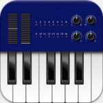
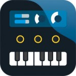

If you have subscribed to the Music App Blog email newsletter then you will have obtained a copy of our free guide titled ’25 iOS music apps to get you started’. This guide is probably due (yet another) update but, as keen eyed readers will have noted (err…. or anyone who can actually count) there are actually rather more than 25 apps listed in the guide.
The reason for this is (a) quite simple and (b) rather wonderful. It’s simple because the iTunes App Store has a massive selection of iOS music apps available and wonderful because, from that massive selection, there is actually a very significant crop of really (really, really!) very good pieces of music software to be found.
So, the ’25 apps guide’ was a great way to get you started and, while it is most definitely a personal selection on my part (and your needs and choices may differ), you can think of it as a ‘best of the best’ list. What this means, of course, is that there are also a lot of very good music apps that did not make it into the guide….
For the computer-based musician, virtual instruments are now an everyday tool for music creation.
OK, what about the rest of those apps? Well, if I was to do single post covering the ‘best of the rest’ then it would be loooonnnngggg (I know, I’ve never been shy of long posts but even I draw a limit somewhere). Instead, what I’ve done is split that potentially ‘mega-long’ post into an occasional series of shorter app roundups…. and, in each post, taking a different category of app.
And, for this particular post I’m going to cover the category of ‘virtual instrument apps’….. In fact, this is a ‘v.2.’ of this post as it will bring up-to-date (at the time of writing) an earlier version with some new apps included here and one or two removed that have perhaps been usurped or where the development has been less active over the last 12 months or so.
Virtual instruments as apps
If you have been around computer-based music (iOS or otherwise) for any length of time then you will be familiar with the idea of a ‘virtual’ instrument. However, if you are new to music technology and iOS represents your first exploration into music creation using a computing device, then a little background might be useful.
In essence, a ‘virtual’ instrument refers to the recreation of a ‘real’ instrument (a guitar, a drum kit, a piano, a violin, etc.) in software. This can actually take a number of forms, two of which are most common. First (and perhaps less common for most of the instruments just listed), software can actually model the fundamental physics that underlies the way the instrument creates sound. So, for example, this would involve modelling the way a string vibrates on an acoustic guitar and how that vibration triggers resonance in the guitar’s body. This is a hugely complex process and, even if you can construct a suitably realistic model, the odds are that it would take a pretty hefty computer system to run it. Incidentally, the one common exception to this is ‘modelled’ versions of hardware synths…. but I’ve done a separate roundup article for that category.
The second form of virtual instrument – and by far the most common – is based upon audio samples. In this case, the sound of the real instrument is recorded as audio and then, when you want to play the ‘virtual’ version, you trigger that audio sample to play back (and the most common way to trigger these sampled instruments is from a MIDI keyboard although there are other options). Of course, in practice, it requires something a bit more sophisticated than that. For example, let’s consider a piano….
While the human voice has been attempted as a virtual instrument (check out Vocaloid for the desktop), it is perhaps the one exception where virtual instruments can’t deliver ‘real’ sound ing results if used with a bit if care.
In order that the virtual version sounds at least a bit realistic, you need to sample multiple notes from the full range of the piano keyboard (this might not be every note as software can pitch shift samples to fill in the gaps but, frankly, it’s better if it is every note). However, you can play sustained notes on a piano and you can also play short (staccato) notes (plus other performance styles) so, for additional realism, you need to have samples of both and the ‘virtual’ instrument needs to allow the performer to switch between them in a natural fashion as they play. Then, of course, the piano sounds different if you play it softly compared to when you give the notes a good wack…. so you need to sample each note at different playing strengths….
And we could go on… detailing all the subtle variations that need to be captured in the initial sampling and then reproduced by the sample playback engine when the performer tries to play the virtual instrument via their MIDI keyboard (or other MIDI triggering device). The bottom line here is that sample-based virtual instrument can also be complex (although generally not as complex as physically modelled versions of the same real instrument) and, for the best results, require very detailed sampling.
Virtual instruments on an iDevice?
In both these approaches to virtual instruments – physically modelled and sample-based – it is, therefore, quite easy to see why an iDevice might be at a bit of a disadvantage compared to your average desktop computer system. Even the latest iPads can’t really compete with a desktop system for CPU grunt (needed for the physical modelling approach) or RAM/hard drive storage (needed for the mega-sample sets), although, in terms of RAM, the iPad Air 2 (with 2GB) and iPad Pro (4GB) are very useful steps forward.
In fact, given that most physically modelled virtual instruments focus on recreations of synths (including those that originally existed as analog hardware) as opposed to something infinitely more complex to model (for example, a violin), virtual synth apps can be created that run brilliantly on an iPad (even on earlier models of iPad).
If you want a virtual piano to sound as good as a real piano then that requires a lot of detailed sampling.
In terms of sample-based instruments there are perhaps more obvious limitations under iOS. The way this usually manifests itself is in reduced detail of the sampling that sits behind these app-based virtual instruments. First, this means fewer ‘performance articulations’ (for example, for a violin, you would have to load separate patches for performing notes played staccato, pizzicato, sustained, vibrato, etc. On a desktop system, the better sampled instruments allow you to switch between these performance styles within a single patch using a system known as ‘key-switching’; a small section of the MIDI keyboard – hopefully outside the usual range of notes for that instrument – are reserved for sending commands to switch between the different articulations.
Second, there tends to be fewer sample layers meaning you don’t get the sense of ‘expression’ as you move from playing quiet notes to louder notes – you just get the same sample played quietly or loudly and it’s not the same thing.
All that said, app developers have still managed to create some very credible sample-based instruments for iOS musicians. They may not have all the subtlety that a top-of-the-line desktop sample-based virtual instrument can muster but then neither to they have a top-of-the-line price tag. And some of them can also bring something unique via the touchscreen interface.
So, with that pre-amble in place, and leaving aside the virtual synths (already done) and virtual drums (a target for a future round-up), let’s take a look at some of the best sample-based virtual instruments currently (at the time of writing anyway) available for iOS…. There is still quite a selection to consider though so, for convenience, I’ll deal with them in a number of sub-categories.
Incidentally, where I’ve previous done a full review of any of the apps below, then I’ve included a link to that review. many of these will have been done at the time of the app’s release so it would also be worthwhile searching the site (use the search box located top-right) for any posts on significant updates….
All-round apps
Let’s start with a few all-rounders. These are apps that provide broad collections of sample-based instruments. These might include guitars, pianos, keyboards, strings, brass, ethnic, drums, percussion, sound FX and various others. Having at least one of these all-rounders to hand is never a bad idea as their give you a bread and butter sound palette that can serve a wide range of purposes.
SampleTank
Some iOS musicians used to have a bit of a love/hate relationship with IK Multimedia because of their use of pop-up ads that used to appear on start-up in many of their iOS music apps. However, to their credit, this is a policy that IKM changed in response to user pressure…. and, with or without the occasional pop-up ad, it is difficult to argue that against the observation that IK Multimedia do make some very good apps. In terms of a generic sample-based virtual instrument, SampleTank is most definitely up there with the best currently available.
SampleTank provides a collection of sample-based virtual instruments that you can play using the onscreen keyboard or via MIDI sent from another app (for example, Cubasis) or an external MIDI keyboard. The app is ‘four-part multi-timbral’ which means that you can actually load four different sounds at any one time and trigger each of these independently via a different MIDI channel number or, if you wished, layer multiple sounds.
In terms of the sounds themselves, these are split into a number of categories; Drums, Bass, Guitar, Piano, Electric Piano, Organ, Chromatic, Strings, Brass, Woodwinds, Lead Synth, Synth Pad, Voices, Ethnic, Percussion, and Sound FX. The free version of the app is supplied with a single sound in each category purely for demonstration purposes but the paid version, at UK£14.99, comes with around 140 instruments. If you happen to own an iRig MIDI device, you can add a further 48 instruments when you register it.
SampleTank; a broad palette of sounds and MIDI performances in the paid version with more available via IAPs.
However, there are also a large number of in-app-purchases that allow you to add even more instruments. These include an ‘All Sounds Pack’ option (UK£29.99) plus two premium packs – the Miroslav Philharmonik Mobile Edition and the Sample Moog Mobile Edition (both UK£14.99) – that obviously expand the sonic possibilities. The Miroslav option is one that may well interest quite a lot of potential users as one of the consequences of it being more difficult to construct detailed sample-based instruments given the iPad’s more restricted storage capacity is that realistic sampled-based orchestral instruments are a bit thin on the ground.
In addition, for each instrument category, SampleTank is supplied with a collection of what are essentially MIDI loops. Once you load an instrument you can, therefore, trigger the playback of one of these ‘grooves’ from the set associated with that instrument category. And as the app includes the ability to create presets based upon a set of up to four instrument/groove combinations, and as you can then trigger these presets in real-time, you could easily imagine building a song idea or performance from them. Equally, you can trigger grooves on the fly via the touchscreen and the app also includes a four-track MIDI recording function.
It is also a universal app so works with both iPad and iPhone. It requires iOS7.0 or later and includes both Audiobus and IAA support so it works well with other music apps.
In terms of sheer power or features or even sample depth, SampleTank for iOS is not going to challenge the leading desktop sample-playback engines anytime soon. However, as a source of sample-based sounds for composers or performers or songwriters, personally I think it is the best ‘all-in-one’ solution iOS currently has to offer. It is well-featured, generally easy to use and, providing you are willing to invest in some of the additional content (which does, of course, raise the overall price), stuffed full of very useable sounds.
SampleTank
bs-16i
Bismark bs-16i (UK£5.99) provides a sample-based virtual instrument collection. The app makes use of a sample format know as the soundfont. This was created back in the day when even desktop computers couldn’t cope with large sample sets and it is generally a compact sample format. However, it got quite a cult following and, as a result, lots of user-created soundfont sample sets can be found scattered around the internet.
This is a great way of expanding your sound sources for little or no additional cost and such soundfonts can be loaded into bs-16i for use in your own music projects.It only takes up about 70MB of space but provides a very respectable soundfont-based sample library covering a wide range of GM-style instruments. The quality of the sounds is actually pretty good and, as it supports both Audiobus and IAA and the size of the keys can be adjusted to suit even the stubbiest of fingers on the relatively modest iPhone screen, it does the business with a minimum of fuss.
Bismark’s bs-16i provides a good palette of basic sounds to work with on both iPhone and iPad.
The other advantage of bs-16i is that it is 16-part multitimbral. With a suitable MIDI sequencer (such as Cubasis) you could, therefore, play 16 different sounds via bs-16i at the same time, all playing back MIDI parts from different MIDI tracks. The interface is very straightforward and, while it doesn’t offer you masses of options in terms of tweaking the basic sounds, it is very easy to find your way around and provides excellent value for money.
bs-16i
ThumbJam
ThumbJam by Sonosaurus is a very different type of app to the previous two mentioned. While it provides a good range of sample-based sounds for you to play with and can also be used in a multi-timbral mode playing back multiple different instruments at the same time, perhaps its real strength and selling point is the performance interface. This makes tremendous use of both the touchscreen and the motion sensors in your iDevice. The result is that, even with a fairly modest sample base for the sounds, you can coax some really expressive performances from the apps.
It also has to be said that the app is a bit of an iOS classic and, while it has not been updated for some time (October 2014 to be precise), it does still seem to work pretty well under iOS9 and the latest version of Audiobus.
ThumbJam’s interface might look a little plain but it is very playable.
The app is universal (iPad and iPhone) and includes Audiobus and IAA support. The playing interface can be used to send MIDI data to other apps (so it also doubles as a MIDI performance app) and, if you want to sing or play a single-note melody line into the app via an instrument, it will make a pretty good stab at audio-to-MIDI conversion. At UK£6.99 this is an app that every iOS music maker ought to give a try.
ThumbJam
Almost all-in-one virtual instruments
 Module by Korg
Module by Korg
Korg have made quite a splash with their various iOS music apps and also some iOS-friendly hardware. In Module, they have created a top-notch sample-based virtual instrument and, while the instruments currently available are perhaps dominated by pianos, there are a number of other sound categories included… perhaps not such a wide palette as SampleTank or bs-16i…. but wide enough not to be ‘just’ a piano option…. hence the ‘almost all-in-one’ category….
Korg Module – top-notch virtual instrument app for your iPad.
Module is not cheap – the usual price is UK£29.99 – but it is supplied with an impressive collection of (mainly piano) sounds by default. There are also three expansion IAP packs available that add vintage organs, an top-notch grand piano (2 GB of samples on its own) and a collection of very good synth sounds. Once you have all this stuff on-board, the app is quite hefty but, if you want some of the very best sounds available under iOS, then this is it… and the underlying playback engine means the detailed sampling can be fully exploited.
Module offers a number of additional sounds via IAP.
The app offers Audiobus and IAA support but, if you also happen to own Korg’s Gadget, Module appears as a ‘gadget’ within that app and can be used there as a multi-timbral sound source.
Module sounds great…. and it will be interesting to see if Korg continue to add further IAPs. Their take on an orchestral library for Module would, for example, be a very welcome sight…. Even so, this is a great app….
Module
Guitar apps
Of course, sample-based virtual instruments don’t have to cover all the instrument classes; you also get those that specialise on a single instrument type. For guitar and bass guitar there are actually quite a few options on the App Store but I’ll highlight three of my particular favourites here.
 Guitarism
Guitarism
The iTunes App Store is full of lots of ‘playable’ virtual instruments but, as a guitar player, if I had to pick just one, it would be Guitarism. The basic app is currently UK£3.99 but it also offers a number of ‘free’ IAPs that expand on the features and the range of available sounds (including some electric guitars). These are well worth exploring and, overall, it is still excellent value for money.
The attractiveness of this app is not that it is stuffed full of features or that it is based upon the most sophisticated of multi-layered samples (although the sound itself is actually very good). What makes the app useful is that, with a modicum of practice, it is actually quite playable. Sure, if you try to play high-tempo strumming, that can take a lot of work to get right and any mistakes you make can easily reveal the ‘not a real guitar’ nature of what Guitarism generates. But, for medium and low tempo strumming, you can create some remarkably convincing performances. And, in the rather neat additional tilt and mute features, you have plenty of performance options, all of which are relatively easy to learn.
Guitarism now has electric options via the Rockstar Collection IAP – and still works great with Audiobus.
Nope, I’m not going to sell my Taylor acoustic and replace it with Guitarism but, when I’m out and about without my guitar and need something to knock a few chords out on, Guitarism is well worth pulling my iPhone (or iPad as it is a universal app) out of my pocket for. The only downside is that, at the time of writing, the app has not received an update in quite some time but it does seem to still be working very smoothly under iOS9. Well worth a strum…. :-)
Guitarism
 iFretless Bass
iFretless Bass
For bass players, iFretless Bass is not quite the same sort of beast as Guitarism. The latter is great for some very wholesome strumming but iFretless Bass is a more heavyweight app altogether. Indeed, when it comes to bass guitar sounds, the detailing in the sampling used in iFretless Bass means it is probably the most sophisticated virtual bass instrument currently available for iOS. The sounds cover fretless and fretted bass styles as well as an acoustic bass and a few synth sounds. Make sure to listen on decent headphones or speakers though just to get the full benefit of the rather wonderful bottom end; the sound is very solid.
iFretless Bass includes support for IAA.
At UK£10.99, iFretless bass is a good deal just on the basis of the quality of the samples. However, you also get the rather brilliant user interface. With virtual strings and frets that will make bass and guitar players feel quickly at home, the app includes some fabulous performance options such as velocity sensitivity, hammer-ons, slides and vibrato.
And as the app also supports MIDI in and out, you can use the interface to control other iOS music apps if you wish. For guitar shaped fingers, this is much better than using a virtual piano keyboard. iFretless Bass also includes Audiobus and IAA support so it is also great as a source of bass sounds in a recording context. The app was updated in October for operation under iOS9.
iFretless Bass
 iFretless Guitar
iFretless Guitar
For iFretless Guitar (UK£7.99), you can pretty much take as read the entry above. This uses a very similar sound engine to iFretless Bass but it is populated with guitar samples rather than bass guitar samples. It is equally good. iFretless Guitar is perhaps better at melody/solo performances that pure strumming when compared to Guitarism but the sound is great and the performance interface very clever.
iFretless Guitar – the main interface will be familiar to users of iFretless Bass.
There is a nice selection of basic guitar tones spanning nylon acoustic through to crunchy ‘rawk’ electric. You also get some basic effects although you could, of course, feed the output of iFreless Guitar through a suitable guitar amp sim app if you wanted more detailed control on the amp/effects end of the sound.
iFretless Guitar
Piano apps
Virtual keyboard instruments are not, of course, all about synths; pianos are required also. There are lots of virtual acoustic pianos apps on the iTunes App Store and, while some such apps used synthesized piano sounds, more commonly these are sample based. The problem with the majority of these, however, is that sound quality and playing detail are often sacrificed for keeping the size of the samples in check.
As well as the apps below, you should also consider Module as described above. It does a very good job as a dedicated source of piano sounds and is on a par with the best of what’s in the dedicated piano category.
iGrand
This is not the case with IK Multimedia’s iGrand sample-based acoustic piano app and the key sale’s pitch is that the sampling is more detailed than any other piano app currently available. Personally, I think this is a pretty fair claim and, while the app takes up a fairly substantial 256MB, in use I actually think it packs a punch well above its sample weight.
There is a basic free app with a single piano but the paid version (currently UK£14.99) provides some 8 different pianos, while two further IAP expansion packs (at UK£7.99 each) adds further pianos suitable for jazz, rock, pop and other musical styles. While you can undoubtedly buy more detailed sample-based piano instruments for the desktop (where sample storage is less of an issue), you will also pay considerably more and iGrand manages to strike an excellent balance between sound, a compact footprint suited to the iPad, and price.
iGrand probably offers the best sample-based acoustic piano sounds currently available under iOS
There are enough sample layers used to give your performance some genuine character and if you do use your iPad for live performance (hooked up to a suitable hardware MIDI keyboard), iGrand would make a perfectly respectable sound source for all but the most demanding of contexts. Requiring iOS7.0 or later, and with Audiobus and IAA support included (as well as support for iOS9), it is also an excellent source of acoustic piano sounds available for an iOS recording system. There is a separate version for iPhone if you are working on the more compact platform.
iGrand
iLectric
Pretty much everything I’ve just said about iGrand also applies to IK Multimedia’s iLectric and, as the name suggests, this provides a suite of classic electric piano instrument, all with very detailed sampling to give a rich – and very playable –sound. The basic app is priced at UK£14.99 and includes 20 electric piano and clavinet sounds, with further sounds available via two additional IAPs (UK£7.99 each). The sounds are universally good with patch names such as ‘Suitcase EP 1’ or Wurly Stage’ giving a clear idea of what the sound is based upon.
For electric piano sounds, iLectric is pretty hard to beat at present.
As with iGrand, the interface is stylish and very easy to use. The app also includes a very nice control strip providing access to effects such as EQ, reverb, overdrive and modulation effects (chorus, phaser, tremolo, autopan and flanger). Like iGrand, Audiobus and IAA support is included, iOS7.0 is required but iOS9 support was added in the most recent update. Hooked up to an external MIDI keyboard, this would make a very nice electric piano sound source for a performance context.
iLectric
Neo-Soul Keys
The other top-notch options for electric piano sounds is Neo-Soul Keys. The basic app is universal (it supports both iPad and iPhone) and is actually free. However, the free version is ‘ad supported’ and, to remove the ads and to access the full range of electric pianos available, you can choose from a number of IAPs.
With MIDI and Audiobus support, the app is easy to use in either a recording or a live performance context and, like iLectric, it is quite a sizeable app (975MB). However, the sounds themselves are very good.
Neo-Soul Keys provides some great electric piano sounds. The app is really designed to be played with an external keyboard but there is a virtual keyboard that can be opened if you need it.
You probably don’t need both iLectric and Neo-Soul Keys (unless you are a real electric piano die-hard) so the option to try the sounds before you buy is a very useful one. The app has just been updated and, while it requires iOS7.1 or later, should now also work fine with the latest version of iOS9.
NeoSoul Keys
Orchestral apps
As mentioned above, some of the ‘all-in-one’ apps – and SampleTank in particular – do offer some very respectable orchestral sounds. However, if you want the very best orchestral sounds that iOS currently has to offer – and you are prepared to budget for them – then there really is only one iOS developer in the game at present; Crudebyte.
 iSymphonic Orchestra
iSymphonic Orchestra
When iSymphonic Orchestra was first launched, it perhaps didn’t quite live up to the hype…. It promised a complete orchestra in an app that would compete with the best orchestral libraries on the desktop. Even with a price tag of UK£22.99 (high by iOS app standards) this was a bit of a bold claim. However, since initial release, iSymphonic has had a number of updates and, while it is still going to be a big challenge for an iOS app to complete with the best sample-based virtual instruments available on the desktop (with desktop RAM, hard drive capacities and prices), iSymphonic has now developed into a very good app indeed…. and it is certainly the best collection of orchestral sounds currently available on the platform.
iSymphonic Orchestra – the best orchestral sounds that iOS currently has to offer.
The app requires iOS5.1 or later but includes support for all the more recent incarnations of the OS. Audiobus and IAA support are included and the base app comes in at around 870MB. This is dominated by a collection of very good orchestral string-based sounds and some patches where strings and (for example) woodwind are combined. The app is also multi-timbral and, while it includes its own MIDI recording features, I suspect most users would opt for a dedicated MIDI sequencing environment (such as Cubasis or Auria Pro) to make full use of this feature.
iSymphonic Orchestra is gradually building up a very good collection of sound options.
However, to really get the best out of what the app has to offer, you also need to budget for a few of the available IAPs. There are (at the time of writing) some nine of these, each priced at UK£8.99 and adding themed collections of additional sounds. These include brass, additional strings, percussion, woodwind and choir options. Each also comes with some chunky storage requirements – so allow for some extra storage space also – but, with a number of these installed, the ‘orchestra in an app’ tag is not such a stretch.
It will be very interesting to see if Crudebyte go the whole hog with iSymphonic and add a system for key switching between different performance articulations (this is currently available in some patches via velocity-based articulation switching).It would be great to see that feature added to an iOS music app and orchestral sounds are the obvious target…. Even so, if top-notch orchestral sounds are what you require for your iPad-based music production, this is the app you need.
iSymphonic Orchestra
 Oriental Strings
Oriental Strings
Oriental Strings was released as a separate app from iSymphonic Orchestra as it is focused on somewhat less traditional ‘western’ string sounds and, as the name suggests, offers a more ‘eastern’ flavour. It does do that and it actually makes a great complement to the string sounds available in iSymphonic. However, as iSymphonic has developed over recent months, I do wonder whether an ‘oriental strings’ IAP for the flagship app might eventually appear to bring all these sounds under a single roof?
Oriental Stings; the sound of the Middle East – well, a bit of it – in an app.
That said, at UK£7.99 for the app, this is well worth a punt for some additional string sounds if you already have iSymphonic. The app requires around 2GB of storage but, otherwise, the features and requirements are the same as iSymphonic.
Oriental Strings
Brass apps
There is an obvious cross-over with brass sounds between the orchestra and the use of the same instruments within a more modern pop or funk context. Anyway, iOS has a few decent brass virtual instruments for those that like to blow a horn or three…..
 Heavy Brass
Heavy Brass
I could have included Heavy Brass in the orchestral section but Crudebyte are really aiming this app at a more contemporary pop/funk brass sound. That said, I think it would work well in an orchestral context and complements some of the brass sounds now available via iSymphonic. The app is priced at UK£14.99, requires 250MB of storage and will work with anything from iOS5.1 or later. Again, Audiobus and IAA are supported.
Heavy Brass – Crudebyte give us some full-on brass sounds in an iPad app.
While Heavy Brass obviously shares some of the sampling technology found in iSymphonic, although it is perhaps not fully-formed, there is the start of a key switching system for moving between different performance articulations within Heavy Brass. This is great to see but it does mean the user interface is somewhat different to that of the two apps described above.
In terms of sounds, you get various different types of brass section and a number of different performance articulations including sustained notes, staccato, crescendo, falls and growls, etc. Yes, of the desktop, you might find bigger and better brass sample libraries, but this is still a very solid instrument with some considerable potential. Here’s hoping that Crudebyte refine this app in the same way that iSymphonic blossomed with each update….
Heavy Brass
 iFretless Sax
iFretless Sax
At the time of writing, iFretless Sax is priced at UK£7.99, and as you might expect given the title, takes the general iFretless concept and applies it to that most expressive of instruments; the saxophone. The same detail and depth exists within the underlying sampling as in the other iFretless apps and, as a consequence, once you get your head (or fingers) around the subtleties of the performance interface, it is possible to coax some remarkably realistic performances from the app.
There are several sax instruments and also a clarinet and bass clarinet and each of the instruments has a distinctive character. For example, the bass sax is suitable deep, the tenor can go from soft and sleazy to punchy and the alto has a slightly lighter tone. As anyone who has tried to muster a realistic ‘sax’ performance out of a sampled instrument will tell you, it is actually a very difficult thing to pull off. In the main, this is because the instrument itself is so fluid and expressive; trying to recreate that with samples is quite a challenge and attempting to do it via a traditional piano-style MIDI keyboard – without some considerable practice and expert pitch wheel work – just adds a further obstacle. In that regard, the string-based interface of iFretless Sax with its ability to add slides and finger vibrato is a big plus. Again, master the playing interface and you can get some impressive sounds from the app.
iFreless Sax uses the same performance interface as iFretless Bass but, this time, with a suitably brass-like colour scheme.
A virtual sax is perhaps a bit of a niche product in the world of music technology (mobile or desktop) but, if you do like your iOS music productions to contain a bit of sax, iFretless Sax is currently the best way to add it.
iFretless Sax
 iFretless Brass
iFretless Brass
If you are after more of a brass section type sound, then iFretless Brass will certainly appeal. Also priced at UK£7.99 – and with iOS9, Audiobus and IAA support meaning it is right up-to-date, iFreless Brass provides euphonium, trombone, trumpet, tuba, French horn, muted trumpet and a small number of synth patches.
As with other iFretless apps, you can pick a single ‘lead’ instrument (along with the ability to transpose it +/- an octave) but also two further ‘secondary’ instruments. The secondary instruments can be configured in one of four modes; off, blend, arrange or extend…. but the ‘blend’ options makes it easy to create a three part ‘brass section’ that you can then play via the excellent performance interface.
iFretless Brass – some of the most expressive brass sounds you can currently coax out of an iPad or iPhone.
The sounds are great and the interface makes it possible to add all sorts of expression to the performance if you spend just a little time to find your way around it. I’m not sure I would pick this over the brass sounds within iSymphonic for orchestra parts (although you could get away with it if needs be) but, for more pop/funk applications, iFretless Brass is a lot of fun.
iFretless Brass
In summary
I think it’s fair to say that, for sample-based virtual instruments, iOS doesn’t fair anywhere near as well as the desktop. This shouldn’t perhaps be such a surprise; the hardware – while brilliant – still operates within some constraints (RAM and storage space) that particularly influence just what can be done in building detailed sample-based playback engines. We are some distance yet from seeing the equivalent of Native Instrument’s Konkakt running on an iPad.
However, that’s not to say what is available isn’t very useable; it is. Equally, while it is all too easy to see a UK£13.99 app as ‘expensive’, compare that to the prices paid for desktop virtual instruments and it is difficult to argue that any of the apps listed above don’t punch above their price.
Hopefully, if you need either an all-in-one virtual instrument app to cover a range of musical bases, or whether you just need something targeted at a specific instrument, there are some possibilities here for you to explore. Happy music making…. and don’t forget to check out the other ‘roundup’ articles available on the site looking at different categories of iOS music apps.


{kind=link}
{kind=link}
{kind=link}
{kind=link}
{kind=link}
{kind=link}
{kind=link}
{kind=link}
{kind=link}
{kind=link}
{kind=link}
{kind=link}
{kind=link}
{kind=link}
{kind=link}
{kind=link}
{kind=link}
{kind=link}
{kind=link}
{kind=link}
{kind=link}
{kind=link}
{kind=link}
{kind=link}
{kind=link}
{kind=link}
{kind=link}
{kind=link}
{kind=link}
Got most of these, and love them. The missing link is a high quality vocal synth, something like Exhale for IOS would be brilliant.
Thanks for the great roundup, John.
A couple of others:
I find Roland Sound Canvas worth mensioning as an alternative to Sample Tank. Like bsi16 it’s 16 voice multitimbral, and it’s very light on disk-usage, 44.2 mb that is.
Also, for those wishing for MIDI key input for Guitar sound, there is Guitar Capo+.
I ‘m surprised that CMP grand piano didn’t make it to list. I also have module and iGrand but, to my ear, CMP’s Steinway beats them all. Furthermore, Crudebytes IAA has always worked flawlessly for me. Try using Module in a Cubasis or Auria midi track: it’s not in the instrument list!
Yes, SoundCanvas and CMP Grand would fit well into this list. But I’m also missing Geo Shred, one of the most impressive (and expressive) virtual instruments on iOS in my opinion.
Nice round-up John. I agree with joaven that CMP Grand should be on the list…really good sounds! And by the way joaven, I’ve used Module in Cubasis as an IAA instrument driven by a midi track…don’t recall having any problems with that.
Also the list could include, especially with the recent update, GarageBand. The new woodwinds and horns instruments sound pretty darn good. Music Studio also has a good variety of decent sounding orchestral instruments and BeatHawk has a number of sample based sounds available as well.
Hi Toz. Yes, I agree, GarageBand and BeatHawk could both be added, along with Yonac’s Steel Guitar, which sounds superb, IMHO. Sadly, by nothing for IOS currently does the trick with regard to human sounding vocals. I asked the blokes at Realitone if they’d port their wonderful Blue singer, but the rep,y was it needs Kontact, and its maker’s seem to have no interest at all in developing an IOS version.
Great roundup..I’m surprised you didn’t include “Jam Maestro” in your list of guitar apps
I’m interested in big church pipe organ sounds. The powerful ones, like in Bach’s Toccata in d-moll. I would like to know, which apps to pay attention and consider in this regard.
The sampled pianos are fine but I have found that synthesised pianos are just as good, take up less RAM/HD Space and sometimes better than samples. Modartt make Pianoteq, my current choice of Piano software. I’m hoping it will be morphed over to an iOS version. As an Endorsee, I’m enquiring.